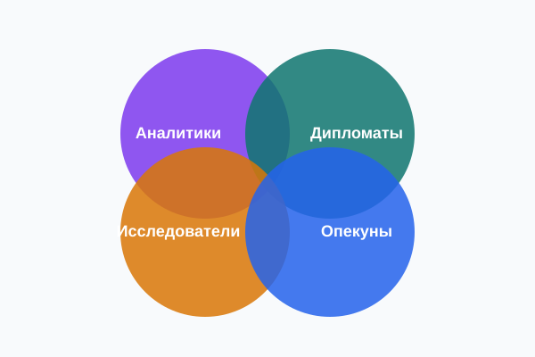

Аналитики
Рациональные стратеги, которых интересуют идеи, системы и причинно-следственные связи.
ПодробнееТипология личности описывает устойчивые предпочтения: откуда мы черпаем энергию, на что обращаем внимание, как решаем и как организуем жизнь. Наш гид объединяет 16 типов в четыре понятные группы.
Изучить типы Пройти тест
В основе деления лежат две пары предпочтений: способ восприятия информации (интуиция или ощущения) и способ принятия решений (мышление или чувства).
Рациональные стратеги, которых интересуют идеи, системы и причинно-следственные связи.
ПодробнееЛюди, для которых важны смысл, ценности и отношения.
ПодробнееПрактики, живущие «здесь и сейчас».
ПодробнееНадёжные организаторы, на которых держатся семьи, команды и институты.
ПодробнееПонимание собственных предпочтений помогает осознанно выбирать профессию, режим работы и способ обучения, а не копировать чужие сценарии.
Знание о том, что другие воспринимают и решают иначе, снижает число конфликтов: «он упрямый» превращается в «ему важнее факты, чем настроение».
Важно: типология - не диагноз и не приговор. Результат теста описывает предпочтения, а не способности, и может меняться в зависимости от возраста и жизненной ситуации.